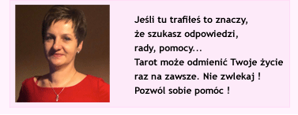

Witam serdecznie, jestem wróżka z Lublina, moim głównym medium wróżebnym są karty Tarota. Jednak podczas seansu wróżbiarskiego często korzystam z numerologii czy kart anielskich. Wspomagam także ludzi dobrą energią Reiki.
Przy pomocy kart tarota analizuję;
- przeszłość, przyczyny zaistniałego problemu,
- teraźniejszość, określam daną sytuację w sposób obiektywny